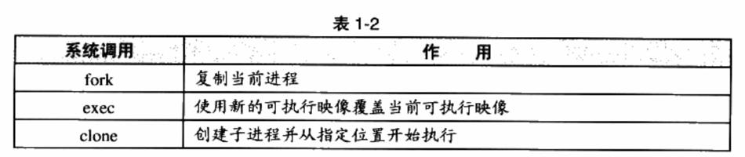

1. 线程基础
线程（Thread），是程序执行流的最小单元。一个标准的线程由线程ID、当前指令指针（PC）、寄存器集合和堆栈组成。
通常意义上，一个进程由一个到多个线程组成，各个线程之间共享程序的内存空间（包括代码段、数据段、堆等）及一些进程级的资源（如打开文件和信号）。
1.1. 线程的访问权限

1.2. 线程调度与优先级
并发是一种模拟出来的状态，操作系统会让这些多线程程序轮流执行，每次仅执行一小段时间（通常是几十到几百毫秒），这样每个线程就“看起来”在同时执行。这样的一个不断在处理器上切换不同的线程的行为称之为线程调度（Thread Schedule）。
在线程调度中，线程通常拥有至少三种状态，分别是：
- 运行（Running）：此时线程正在执行。
- 就绪（Ready）：此时线程可以立刻运行，但CPU已经被占用。
- 等待（Waiting）：此时线程正在等待某一事件（通常是IVO或同步）发生，无法执行。
处于运行中线程拥有一段可以执行的时间，这段时间称为时间片（TimeSlice），当时间片用尽的时候，该进程将进入就绪状态。如果在时间片用尽之前进程就开始等待某事件，那么它将进入等待状态。每当一个线程离开运行状态时，调度系统就会选择一个其他的就绪线程继续执行。在一个处于等待状态的线程所等待的事件发生之后，该线程将进入就绪状态。
1.3. Linux的多线程
Windows对进程和线程的实现如同教科书一般标准，Windows内核有明确的线程和进程的概念。在Windows API中，可以使用明确的API：CreateProcess和CreateThread来创建进程和线程，并且有一系列的API来操纵它们。但对于Linux来说，线程并不是一个通用的概念。
Linux对多线程的支持颇为贫乏，事实上，在Linux内核中并不存在真正意义上的线程概念。Linux将所有的执行实体（无论是线程还是进程）都称为任务（Task），每一个任务概念上都类似于一个单线程的进程，具有内存空间、执行实体、文件资源等。不过，Linux下不同的任务之间可以选择共享内存空间，因而在实际意义上，共享了同一个内存空间的多个任务构成了一个进程，这些任务也就成了这个进程里的线程。在Linux下，用以下方法可以创建一个新的任务。

fork函数产生一个和当前进程完全一样的新进程，并和当前进程一样从fork函数里返回。例如如下代码：
pid_t pid;
if (pid = fork()) {
...
}
在fork函数调用之后，新的任务将启动并和本任务一起从fork函数返回。但不同的是本任务的fork将返回新任务pid,而新任务的fork将返回0。（参考demo，test4）
fork产生新任务的速度非常快，因为fork并不复制原任务的内存空间，而是和原任务一起共享一个写时复制（Copy on Write，COW）的内存空间。所谓写时复制，指的是两个任务可以同时自由地读取内存，但任意一个任务试图对内存进行修改时，内存就会复制一份提供给修改方单独使用，以免影响到其他的任务使用。
fork只能够产生本任务的镜像，因此须要使用exec配合才能够启动别的新任务。exec可以用新的可执行映像替换当前的可执行映像，因此在fork产生了一个新任务之后，新任务可以调用exec来执行新的可执行文件。
exec的demo暂略
fork和exec通常用于产生新任务，而如果要产生新线程，则可以使用clone。使用clone可以产生一个新的任务，从指定的位置开始执行，并且（可选的）共享当前进程的内存空间和文件等。如此就可以在实际效果上产生一个线程。